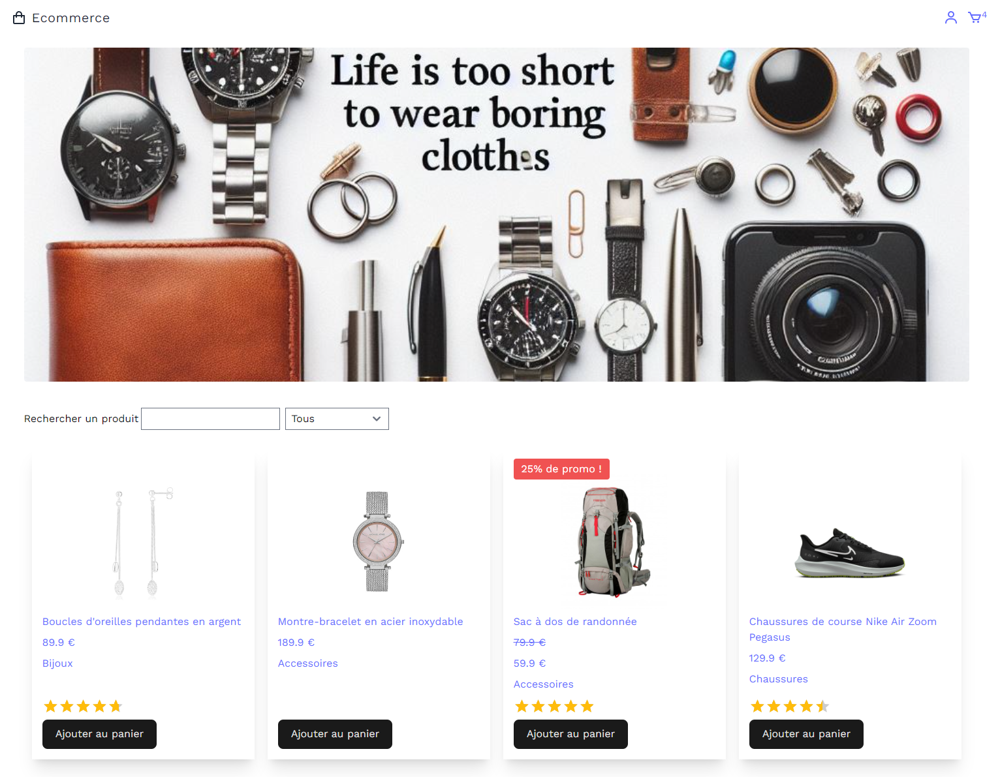
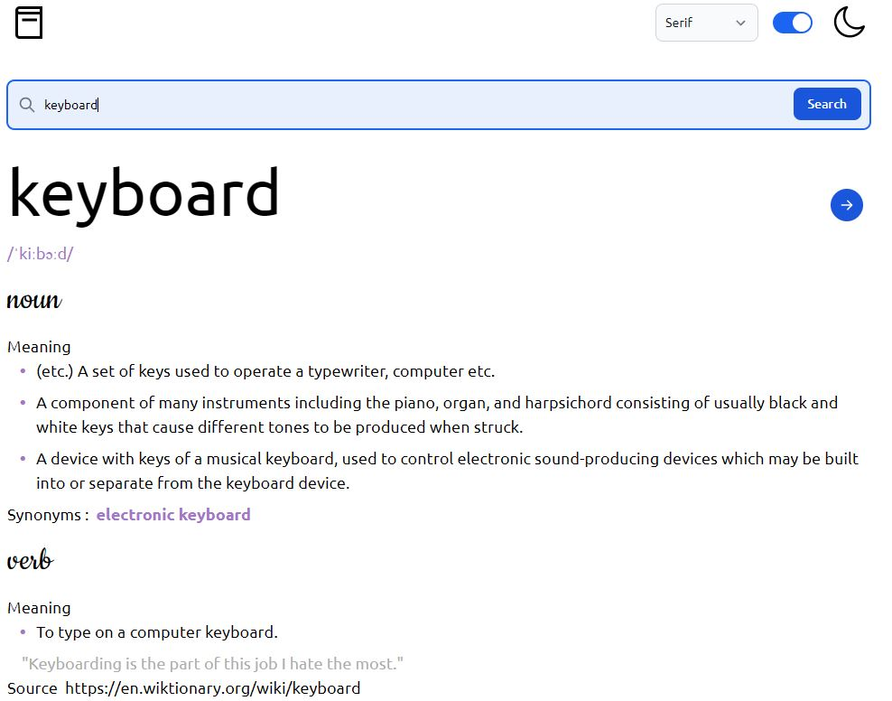
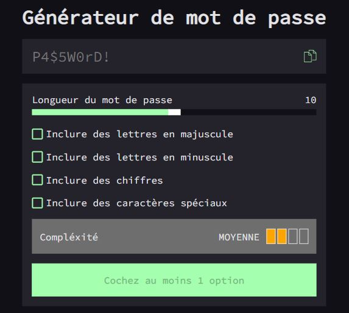

Boutique e-commerce
Application React (Vite) : authentification, catalogue lu depuis Firebase, panier. Un compte connecté peut importer des produits, ensuite enregistrés en base.
TypeScript, React, Tailwind, Firebase
Développeur front-end
J’ai commencé par un CV en ligne en 2015. Je construis toujours des interfaces — plus claires, plus solides, pensées pour durer.
ContinuerJe m’appelle Alex Ungur. Curieux d’informatique, j’ai appris le web en fabriquant ce premier CV — et je n’ai pas vraiment arrêté depuis.
J’ai travaillé avec RT2i, CDS Soft Studiel et Dune Gestion : sites vitrines, interfaces métier, composants React. Aujourd’hui je me concentre sur le front-end, avec une base fullstack.
Depuis août 2022
Mars 2022 — juin 2022
Mai 2021 — mars 2022
Octobre 2019 — novembre 2020
Novembre 2017 — septembre 2019

Application React (Vite) : authentification, catalogue lu depuis Firebase, panier. Un compte connecté peut importer des produits, ensuite enregistrés en base.
TypeScript, React, Tailwind, Firebase

Recherche un mot dans une API anglaise et affiche prononciation, sens et exemples. Thème clair ou sombre, choix de police.
React, SCSS, Tailwind

Compose un mot de passe selon la longueur et les jeux de caractères choisis, avec un indicateur de complexité.
JavaScript, HTML, CSS
Un projet, une question, une opportunité.
alex.ungur@outlook.fr